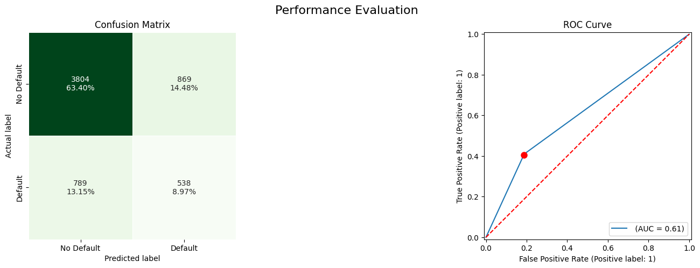
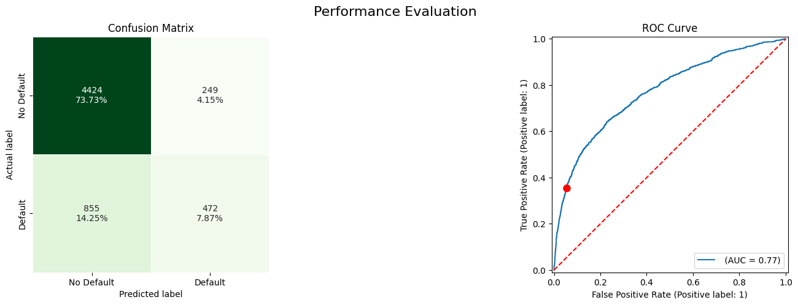

12. Machine Learning - Predicción de default#
import pandas as pd
from sklearn.model_selection import train_test_split
from sklearn.impute import SimpleImputer, KNNImputer
from sklearn.preprocessing import OneHotEncoder
from sklearn.compose import ColumnTransformer
from sklearn.tree import DecisionTreeClassifier
from sklearn.pipeline import Pipeline
Función para reporte de evaluación
from sklearn import metrics
import matplotlib.pyplot as plt
import seaborn as sns
import numpy as np
def performance_evaluation_report(model, X_test, y_test, show_plot=False, labels=None):
"""
Function for creating a performance report of a classification model.
Parameters
----------
model : scikit-learn estimator
A fitted estimator for classification problems.
X_test : pd.DataFrame
DataFrame with features matching y_test
y_test : array/pd.Series
Target of a classification problem.
show_plot : bool
Flag whether to show the plot
labels : list
List with the class names.
Return
------
stats : pd.Series
A series with the most important evaluation metrics
"""
y_pred = model.predict(X_test)
y_pred_prob = model.predict_proba(X_test)[:, 1]
cm = metrics.confusion_matrix(y_test, y_pred)
tn, fp, fn, tp = cm.ravel()
fpr, tpr, _ = metrics.roc_curve(y_test, y_pred_prob)
roc_auc = metrics.auc(fpr, tpr)
precision, recall, _ = metrics.precision_recall_curve(
y_test, y_pred_prob)
pr_auc = metrics.auc(recall, precision)
if show_plot:
if labels is None:
labels = ["Negative", "Positive"]
N_SUBPLOTS = 2
PLOT_WIDTH = 20
PLOT_HEIGHT = 5
fig, ax = plt.subplots(
1, N_SUBPLOTS, figsize=(PLOT_WIDTH, PLOT_HEIGHT))
fig.suptitle("Performance Evaluation", fontsize=16)
# plot 1: confusion matrix ----
# preparing more descriptive labels for the confusion matrix
cm_counts = [f"{val:0.0f}" for val in cm.flatten()]
cm_percentages = [f"{val:.2%}" for val in cm.flatten()/np.sum(cm)]
cm_labels = [f"{v1}\n{v2}" for v1, v2 in zip(cm_counts,cm_percentages)]
cm_labels = np.asarray(cm_labels).reshape(2,2)
sns.heatmap(cm, annot=cm_labels, fmt="", linewidths=.5, cmap="Greens",
square=True, cbar=False, ax=ax[0],
annot_kws={"ha": "center", "va": "center"})
ax[0].set(xlabel="Predicted label",
ylabel="Actual label", title="Confusion Matrix")
ax[0].xaxis.set_ticklabels(labels)
ax[0].yaxis.set_ticklabels(labels)
# plot 2: ROC curve ----
metrics.RocCurveDisplay.from_estimator(model, X_test, y_test, ax=ax[1], name="")
ax[1].set_title("ROC Curve")
ax[1].plot(fp/(fp+tn), tp/(tp+fn), "ro",
markersize=8, label="Decision Point")
ax[1].plot([0, 1], [0, 1], "r--")
stats = {
"accuracy": metrics.accuracy_score(y_test, y_pred),
"precision": metrics.precision_score(y_test, y_pred),
"recall": metrics.recall_score(y_test, y_pred),
"specificity": (tn / (tn + fp)),
"f1_score": metrics.f1_score(y_test, y_pred),
"roc_auc": roc_auc,
}
return stats
Leer datos
df = pd.read_csv("https://raw.githubusercontent.com/erykml/Python-for-Finance-Cookbook-2E/refs/heads/main/Datasets/credit_card_default.csv", na_values="")
df.head()
| limit_bal | sex | education | marriage | age | payment_status_sep | payment_status_aug | payment_status_jul | payment_status_jun | payment_status_may | ... | bill_statement_jun | bill_statement_may | bill_statement_apr | previous_payment_sep | previous_payment_aug | previous_payment_jul | previous_payment_jun | previous_payment_may | previous_payment_apr | default_payment_next_month | |
|---|---|---|---|---|---|---|---|---|---|---|---|---|---|---|---|---|---|---|---|---|---|
| 0 | 20000 | Female | University | Married | 24.0 | Payment delayed 2 months | Payment delayed 2 months | Payed duly | Payed duly | Unknown | ... | 0 | 0 | 0 | 0 | 689 | 0 | 0 | 0 | 0 | 1 |
| 1 | 120000 | Female | University | Single | 26.0 | Payed duly | Payment delayed 2 months | Unknown | Unknown | Unknown | ... | 3272 | 3455 | 3261 | 0 | 1000 | 1000 | 1000 | 0 | 2000 | 1 |
| 2 | 90000 | Female | University | Single | 34.0 | Unknown | Unknown | Unknown | Unknown | Unknown | ... | 14331 | 14948 | 15549 | 1518 | 1500 | 1000 | 1000 | 1000 | 5000 | 0 |
| 3 | 50000 | Female | University | Married | 37.0 | Unknown | Unknown | Unknown | Unknown | Unknown | ... | 28314 | 28959 | 29547 | 2000 | 2019 | 1200 | 1100 | 1069 | 1000 | 0 |
| 4 | 50000 | Male | University | Married | 57.0 | Payed duly | Unknown | Payed duly | Unknown | Unknown | ... | 20940 | 19146 | 19131 | 2000 | 36681 | 10000 | 9000 | 689 | 679 | 0 |
5 rows × 24 columns
df.info()
<class 'pandas.core.frame.DataFrame'>
RangeIndex: 30000 entries, 0 to 29999
Data columns (total 24 columns):
# Column Non-Null Count Dtype
--- ------ -------------- -----
0 limit_bal 30000 non-null int64
1 sex 29850 non-null object
2 education 29850 non-null object
3 marriage 29850 non-null object
4 age 29850 non-null float64
5 payment_status_sep 30000 non-null object
6 payment_status_aug 30000 non-null object
7 payment_status_jul 30000 non-null object
8 payment_status_jun 30000 non-null object
9 payment_status_may 30000 non-null object
10 payment_status_apr 30000 non-null object
11 bill_statement_sep 30000 non-null int64
12 bill_statement_aug 30000 non-null int64
13 bill_statement_jul 30000 non-null int64
14 bill_statement_jun 30000 non-null int64
15 bill_statement_may 30000 non-null int64
16 bill_statement_apr 30000 non-null int64
17 previous_payment_sep 30000 non-null int64
18 previous_payment_aug 30000 non-null int64
19 previous_payment_jul 30000 non-null int64
20 previous_payment_jun 30000 non-null int64
21 previous_payment_may 30000 non-null int64
22 previous_payment_apr 30000 non-null int64
23 default_payment_next_month 30000 non-null int64
dtypes: float64(1), int64(14), object(9)
memory usage: 5.5+ MB
Separar en entrenamiento y prueba
X = df.copy()
y = X.pop("default_payment_next_month")
X_train, X_test, y_train, y_test = train_test_split(X, y,
test_size=0.2,
stratify=y,
random_state=42)
Procesar variables
num_features = X_train.select_dtypes(include="number").columns.to_list()
cat_features = X_train.select_dtypes(include="object").columns.to_list()
num_pipeline = Pipeline(steps=[
("imputer", KNNImputer())
])
cat_list = [list(X_train[col].dropna().unique()) for col in cat_features]
cat_pipeline = Pipeline(steps=[
("imputer", SimpleImputer(strategy="most_frequent")),
("onehot", OneHotEncoder(categories=cat_list,
handle_unknown="error", drop="first"))
])
cat_list
[['Female', 'Male'],
['University', 'Graduate school', 'High school', 'Others'],
['Single', 'Married', 'Others'],
['Payment delayed 2 months',
'Payment delayed 1 month',
'Unknown',
'Payed duly',
'Payment delayed 3 months',
'Payment delayed 4 months',
'Payment delayed 6 months',
'Payment delayed 5 months',
'Payment delayed 8 months',
'Payment delayed 7 months'],
['Payment delayed 2 months',
'Payed duly',
'Unknown',
'Payment delayed 3 months',
'Payment delayed 1 month',
'Payment delayed 4 months',
'Payment delayed 5 months',
'Payment delayed 7 months',
'Payment delayed 6 months',
'Payment delayed 8 months'],
['Payment delayed 3 months',
'Payed duly',
'Unknown',
'Payment delayed 2 months',
'Payment delayed 4 months',
'Payment delayed 7 months',
'Payment delayed 6 months',
'Payment delayed 5 months',
'Payment delayed 1 month',
'Payment delayed 8 months'],
['Payment delayed 2 months',
'Unknown',
'Payed duly',
'Payment delayed 3 months',
'Payment delayed 7 months',
'Payment delayed 4 months',
'Payment delayed 5 months',
'Payment delayed 1 month',
'Payment delayed 8 months',
'Payment delayed 6 months'],
['Unknown',
'Payed duly',
'Payment delayed 2 months',
'Payment delayed 7 months',
'Payment delayed 5 months',
'Payment delayed 4 months',
'Payment delayed 3 months',
'Payment delayed 6 months',
'Payment delayed 8 months'],
['Unknown',
'Payment delayed 2 months',
'Payed duly',
'Payment delayed 6 months',
'Payment delayed 4 months',
'Payment delayed 3 months',
'Payment delayed 7 months',
'Payment delayed 5 months',
'Payment delayed 8 months']]
preprocessor = ColumnTransformer(
transformers=[
("numerical", num_pipeline, num_features),
("categorical", cat_pipeline, cat_features)
],
remainder="drop"
)
Entrenar y evaluar árbol de decisión
tree_pipeline = Pipeline(
steps=[("preprocessor", preprocessor),
("classifier", DecisionTreeClassifier(random_state=42))]
)
tree_pipeline.fit(X_train, y_train)
LABELS = ["No Default", "Default"]
tree_perf = performance_evaluation_report(tree_pipeline, X_test,
y_test, labels=LABELS,
show_plot=True)

tree_perf
{'accuracy': 0.7236666666666667,
'precision': 0.3823738450604122,
'recall': 0.4054257724189902,
'specificity': np.float64(0.8140380911619944),
'f1_score': 0.393562545720556,
'roc_auc': np.float64(0.6109321276921358)}
tree_pipeline
Pipeline(steps=[('preprocessor',
ColumnTransformer(transformers=[('numerical',
Pipeline(steps=[('imputer',
KNNImputer())]),
['limit_bal', 'age',
'bill_statement_sep',
'bill_statement_aug',
'bill_statement_jul',
'bill_statement_jun',
'bill_statement_may',
'bill_statement_apr',
'previous_payment_sep',
'previous_payment_aug',
'previous_payment_jul',
'previous_paymen...
'Payment '
'delayed '
'3 '
'months',
'Payment '
'delayed '
'7 '
'months',
'Payment '
'delayed '
'5 '
'months',
'Payment '
'delayed '
'8 '
'months']],
drop='first'))]),
['sex', 'education',
'marriage',
'payment_status_sep',
'payment_status_aug',
'payment_status_jul',
'payment_status_jun',
'payment_status_may',
'payment_status_apr'])])),
('classifier', DecisionTreeClassifier(random_state=42))])In a Jupyter environment, please rerun this cell to show the HTML representation or trust the notebook. On GitHub, the HTML representation is unable to render, please try loading this page with nbviewer.org.
Pipeline(steps=[('preprocessor',
ColumnTransformer(transformers=[('numerical',
Pipeline(steps=[('imputer',
KNNImputer())]),
['limit_bal', 'age',
'bill_statement_sep',
'bill_statement_aug',
'bill_statement_jul',
'bill_statement_jun',
'bill_statement_may',
'bill_statement_apr',
'previous_payment_sep',
'previous_payment_aug',
'previous_payment_jul',
'previous_paymen...
'Payment '
'delayed '
'3 '
'months',
'Payment '
'delayed '
'7 '
'months',
'Payment '
'delayed '
'5 '
'months',
'Payment '
'delayed '
'8 '
'months']],
drop='first'))]),
['sex', 'education',
'marriage',
'payment_status_sep',
'payment_status_aug',
'payment_status_jul',
'payment_status_jun',
'payment_status_may',
'payment_status_apr'])])),
('classifier', DecisionTreeClassifier(random_state=42))])ColumnTransformer(transformers=[('numerical',
Pipeline(steps=[('imputer', KNNImputer())]),
['limit_bal', 'age', 'bill_statement_sep',
'bill_statement_aug', 'bill_statement_jul',
'bill_statement_jun', 'bill_statement_may',
'bill_statement_apr', 'previous_payment_sep',
'previous_payment_aug',
'previous_payment_jul',
'previous_payment_jun',
'previous_payment_may',
'p...
'Payment '
'delayed '
'6 '
'months',
'Payment '
'delayed '
'4 '
'months',
'Payment '
'delayed '
'3 '
'months',
'Payment '
'delayed '
'7 '
'months',
'Payment '
'delayed '
'5 '
'months',
'Payment '
'delayed '
'8 '
'months']],
drop='first'))]),
['sex', 'education', 'marriage',
'payment_status_sep', 'payment_status_aug',
'payment_status_jul', 'payment_status_jun',
'payment_status_may',
'payment_status_apr'])])['limit_bal', 'age', 'bill_statement_sep', 'bill_statement_aug', 'bill_statement_jul', 'bill_statement_jun', 'bill_statement_may', 'bill_statement_apr', 'previous_payment_sep', 'previous_payment_aug', 'previous_payment_jul', 'previous_payment_jun', 'previous_payment_may', 'previous_payment_apr']
KNNImputer()
['sex', 'education', 'marriage', 'payment_status_sep', 'payment_status_aug', 'payment_status_jul', 'payment_status_jun', 'payment_status_may', 'payment_status_apr']
SimpleImputer(strategy='most_frequent')
OneHotEncoder(categories=[['Female', 'Male'],
['University', 'Graduate school', 'High school',
'Others'],
['Single', 'Married', 'Others'],
['Payment delayed 2 months',
'Payment delayed 1 month', 'Unknown', 'Payed duly',
'Payment delayed 3 months',
'Payment delayed 4 months',
'Payment delayed 6 months',
'Payment delayed 5 months',
'Payment delayed 8 months',
'Payment delayed 7 months'],
['Payme...
'Payment delayed 7 months',
'Payment delayed 5 months',
'Payment delayed 4 months',
'Payment delayed 3 months',
'Payment delayed 6 months',
'Payment delayed 8 months'],
['Unknown', 'Payment delayed 2 months', 'Payed duly',
'Payment delayed 6 months',
'Payment delayed 4 months',
'Payment delayed 3 months',
'Payment delayed 7 months',
'Payment delayed 5 months',
'Payment delayed 8 months']],
drop='first')DecisionTreeClassifier(random_state=42)
X_scaled = tree_pipeline[:-1].transform(X_train)
X_scaled
<Compressed Sparse Row sparse matrix of dtype 'float64'
with 426962 stored elements and shape (24000, 72)>
Random Forest y Xgboost#
Entrenar y evaluar Random Forest y Xgboost
from sklearn.ensemble import RandomForestClassifier
from xgboost.sklearn import XGBClassifier
rf = RandomForestClassifier(random_state=42)
rf_pipeline = Pipeline(
steps=[("preprocessor", preprocessor),
("classifier", rf)]
)
rf_pipeline.fit(X_train, y_train)
rf_perf = performance_evaluation_report(rf_pipeline, X_test,
y_test, labels=LABELS,
show_plot=True)
rf_perf
{'accuracy': 0.8123333333333334,
'precision': 0.6397774687065368,
'recall': 0.346646571213263,
'specificity': np.float64(0.9445752193451744),
'f1_score': 0.4496578690127077,
'roc_auc': np.float64(0.7484596612423886)}
xgb = XGBClassifier(random_state=42)
xgb_pipeline = Pipeline(
steps=[("preprocessor", preprocessor),
("classifier", xgb)]
)
xgb_pipeline.fit(X_train, y_train)
xgb_perf = performance_evaluation_report(xgb_pipeline, X_test,
y_test, labels=LABELS,
show_plot=True)
xgb_perf
{'accuracy': 0.81,
'precision': 0.617906683480454,
'recall': 0.36925395629238883,
'specificity': np.float64(0.9351594264926172),
'f1_score': 0.46226415094339623,
'roc_auc': np.float64(0.7574006167644266)}

Random Search#
from sklearn.model_selection import RandomizedSearchCV, StratifiedKFold
from sklearn import metrics
import numpy as np
N_SEARCHES = 10
k_fold = StratifiedKFold(5, shuffle=True, random_state=42)
xgb_param_grid = {
"classifier__n_estimators": np.linspace(100, 500, 5, dtype=int),
"classifier__learning_rate": np.arange(0.05, 0.31, 0.05),
"classifier__max_depth": np.arange(3, 11, 1, dtype=int),
"classifier__min_child_weight": np.arange(1, 8, 1, dtype=int),
"classifier__colsample_bytree": np.linspace(0.3, 1, 7)
}
xgb_rs = RandomizedSearchCV(xgb_pipeline, xgb_param_grid, scoring="recall",
cv=k_fold, n_jobs=-1, verbose=1,
n_iter=N_SEARCHES, random_state=42)
xgb_rs.fit(X_train, y_train)
print(f"Best parameters: {xgb_rs.best_params_}")
print(f"Recall (Training set): {xgb_rs.best_score_:.4f}")
print(f"Recall (Test set): {metrics.recall_score(y_test, xgb_rs.predict(X_test)):.4f}")
Fitting 5 folds for each of 10 candidates, totalling 50 fits
Best parameters: {'classifier__n_estimators': np.int64(100), 'classifier__min_child_weight': np.int64(6), 'classifier__max_depth': np.int64(10), 'classifier__learning_rate': np.float64(0.1), 'classifier__colsample_bytree': np.float64(0.7666666666666666)}
Recall (Training set): 0.3686
Recall (Test set): 0.3557
xgb_rs_perf = performance_evaluation_report(xgb_rs, X_test,
y_test, labels=LABELS,
show_plot=True)

Probar distintos umbrales#
y_pred_proba = xgb_rs.predict_proba(X_test)[:, 1]
y_pred_proba
array([0.13284685, 0.12800911, 0.20624079, ..., 0.08777721, 0.13541837,
0.04430752], dtype=float32)
plt.hist(y_pred_proba)
(array([2435., 1533., 613., 404., 274., 191., 173., 184., 164.,
29.]),
array([0.00641144, 0.10376066, 0.20110987, 0.29845908, 0.39580831,
0.49315754, 0.59050673, 0.68785596, 0.78520519, 0.88255441,
0.97990364]),
<BarContainer object of 10 artists>)
thresholds = np.arange(0, 1, 0.2)
print("Shape of thresholds array:", thresholds.shape)
print("First 5 thresholds:", thresholds[:5])
Shape of thresholds array: (5,)
First 5 thresholds: [0. 0.2 0.4 0.6 0.8]
for threshold in thresholds:
# Convert predicted probabilities to binary predictions based on the current threshold
y_pred_threshold = (y_pred_proba >= threshold).astype(int)
print(threshold)
# Calculate evaluation metrics
metrics.ConfusionMatrixDisplay.from_predictions(
y_test, y_pred_threshold,
display_labels=['No Default', 'Default'],
)
plt.show()
0.0
0.2
0.4
0.6000000000000001
0.8